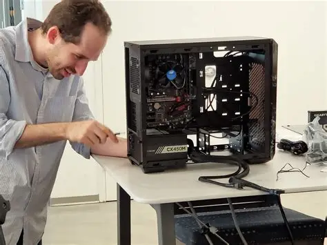

Find the latest gaming Desktop, graphics cards and more at unbeatable specs. Build your dream PC with our easy-to-use custom PC builder. Choose high-performance components for gaming, work, or everyday.

A PC builder is designed to guide users through the process of creating a custom PC by selecting components such as the CPU, motherboard, RAM, graphics card, storage, and power supply while ensuring compatibility between parts. These tools are especially useful for beginners or enthusiasts who want to build a PC tailored to their needs, whether for gaming, content creation, or general use
For more information, you can visit their official website at PC Builder.